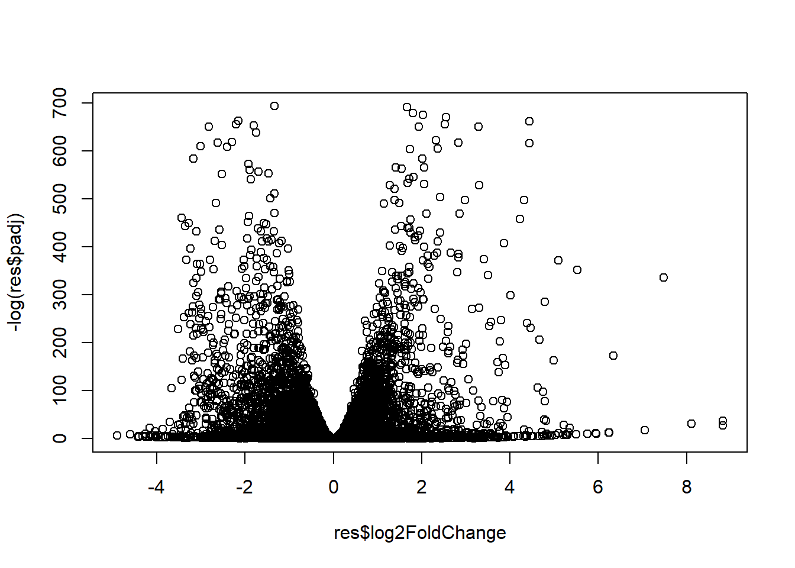
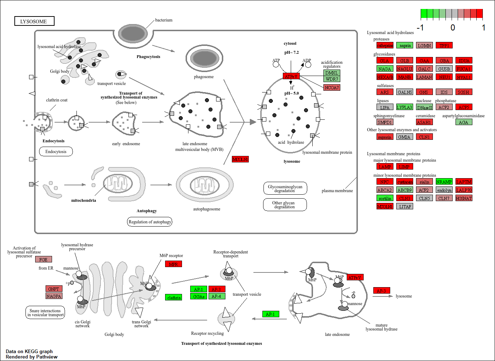
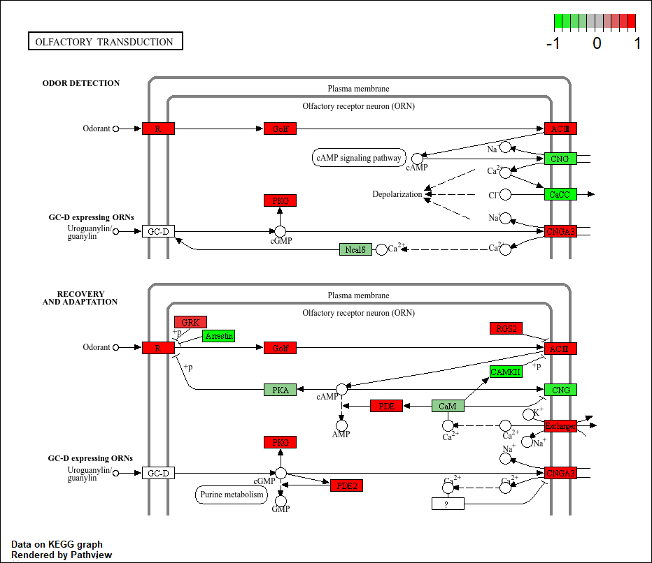
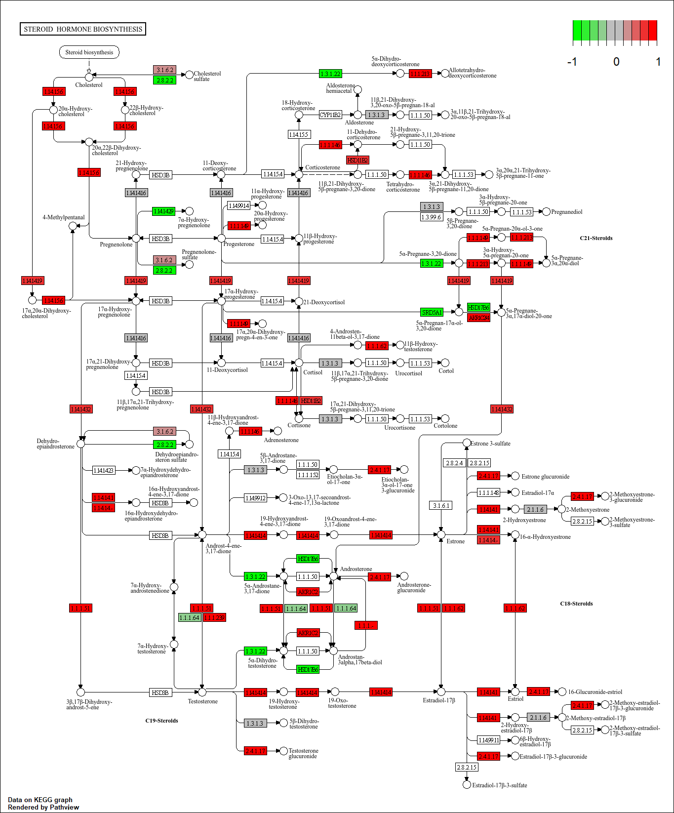
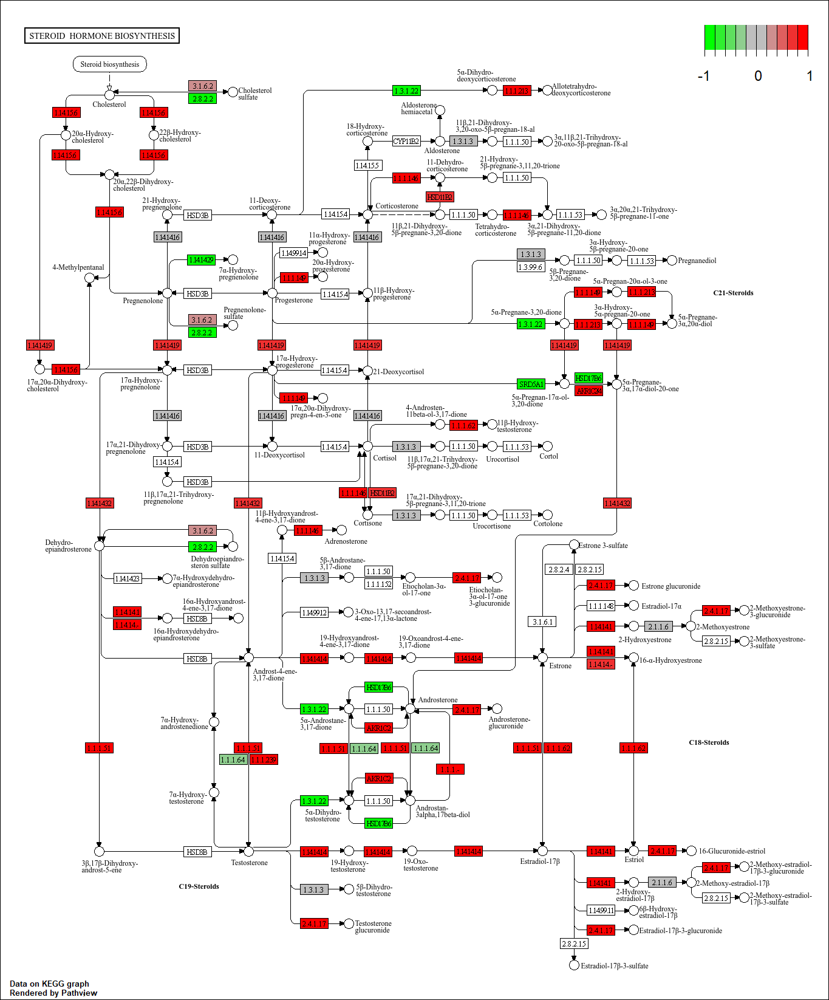
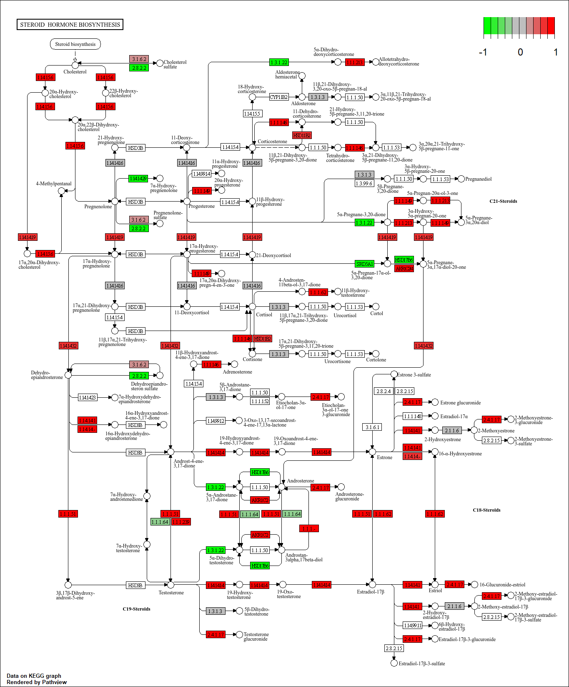

##Our intention is typically to use such lists to gain novel insights about genes and proteins that may have roles in a given phenomenon, phenotype or disease progression. However, in many cases these ‘raw’ gene lists are challenging to interpret due to their large size and lack of useful annotations. Hence, our expensively assembled gene lists often fail to convey the full degree of possible insight about the condition being studied.
##Pathway analysis (also known as gene set analysis or over-representation analysis), aims to reduce the complexity of interpreting gene lists via mapping the listed genes to known (i.e. annotated) biological pathways, processes and functions.
##Section 1. Differential Expression Analysis
library(DESeq2)
Loading required package: S4Vectors
Loading required package: stats4
Loading required package: BiocGenerics
Attaching package: 'BiocGenerics'
The following objects are masked from 'package:stats':
IQR, mad, sd, var, xtabs
Welcome to Bioconductor
Vignettes contain introductory material; view with
'browseVignettes()'. To cite Bioconductor, see
'citation("Biobase")', and for packages 'citation("pkgname")'.
Attaching package: 'Biobase'
The following object is masked from 'package:MatrixGenerics':
rowMedians
The following objects are masked from 'package:matrixStats':
anyMissing, rowMedians
metaFile <-"GSE37704_metadata.csv"countFile <-"GSE37704_featurecounts.csv"# Import metadata and take a peakcolData =read.csv(metaFile, row.names=1)head(colData)
Q. Complete the code below to filter countData to exclude genes (i.e. rows) where we have 0 read count across all samples (i.e. columns).
Tip: What will rowSums() of countData return and how could you use it in this context?
# Filter count data where you have 0 read count across all samples.countData= countData[rowSums(countData[, -1] ==0) <ncol(countData) -1, ]head(countData)
res =results(dds, contrast=c("condition", "hoxa1_kd", "control_sirna"))
Q. Call the summary() function on your results to get a sense of how many genes are up or down-regulated at the default 0.1 p-value cutoff.
summary(res)
out of 15879 with nonzero total read count
adjusted p-value < 0.1
LFC > 0 (up) : 4364, 27%
LFC < 0 (down) : 4418, 28%
outliers [1] : 0, 0%
low counts [2] : 1538, 9.7%
(mean count < 1)
[1] see 'cooksCutoff' argument of ?results
[2] see 'independentFiltering' argument of ?results
##Volcono plot
plot( res$log2FoldChange, -log(res$padj) )

Q. Improve this plot by completing the below code, which adds color and axis labels
# Make a color vector for all genesmycols <-rep("gray", nrow(res) )# Color red the genes with absolute fold change above 2mycols[ abs(res$log2FoldChange) >2 ] <-"red"# Color blue those with adjusted p-value less than 0.01# and absolute fold change more than 2inds <- (res$padj <0.01) & (abs(res$log2FoldChange) >2 )mycols[ inds ] <-"blue"plot( res$log2FoldChange, -log(res$padj), col=mycols, xlab="Log2(FoldChange)", ylab="-Log(P-value)" )
##Adding gene annotation
Q. Use the mapIDs() function multiple times to add SYMBOL, ENTREZID and GENENAME annotation to our results by completing the code below.
'select()' returned 1:many mapping between keys and columns
head(res, 10)
log2 fold change (MLE): condition hoxa1_kd vs control_sirna
Wald test p-value: condition hoxa1 kd vs control sirna
DataFrame with 10 rows and 9 columns
baseMean log2FoldChange lfcSE stat pvalue
<numeric> <numeric> <numeric> <numeric> <numeric>
ENSG00000279457 29.913579 0.1792795 0.3245323 0.552424 5.80658e-01
ENSG00000187634 183.229650 0.4264445 0.1401543 3.042680 2.34482e-03
ENSG00000188976 1651.188076 -0.6927208 0.0548418 -12.631264 1.41979e-36
ENSG00000187961 209.637938 0.7297602 0.1317626 5.538448 3.05163e-08
ENSG00000187583 47.255123 0.0405481 0.2716368 0.149273 8.81338e-01
ENSG00000187642 11.979750 0.5427396 0.5210745 1.041578 2.97607e-01
ENSG00000188290 108.922128 2.0570462 0.1967692 10.454108 1.40312e-25
ENSG00000187608 350.716868 0.2573752 0.1026587 2.507095 1.21728e-02
ENSG00000188157 9128.439422 0.3899088 0.0467420 8.341716 7.32201e-17
ENSG00000237330 0.158192 0.7859552 4.0804729 0.192614 8.47261e-01
padj symbol entrez name
<numeric> <character> <character> <character>
ENSG00000279457 6.77340e-01 NA NA NA
ENSG00000187634 4.97957e-03 SAMD11 148398 sterile alpha motif ..
ENSG00000188976 1.69253e-35 NOC2L 26155 NOC2 like nucleolar ..
ENSG00000187961 1.07765e-07 KLHL17 339451 kelch like family me..
ENSG00000187583 9.16287e-01 PLEKHN1 84069 pleckstrin homology ..
ENSG00000187642 3.94333e-01 PERM1 84808 PPARGC1 and ESRR ind..
ENSG00000188290 1.17812e-24 HES4 57801 hes family bHLH tran..
ENSG00000187608 2.30000e-02 ISG15 9636 ISG15 ubiquitin like..
ENSG00000188157 4.26676e-16 AGRN 375790 agrin
ENSG00000237330 NA RNF223 401934 ring finger protein ..
Q. Finally for this section let’s reorder these results by adjusted p-value and save them to a CSV file in your current project directory.
res = res[order(res$pvalue),]write.csv(res,file="deseq_results.csv")
##Section 2. Pathway Analysis
library(pathview)
##############################################################################
Pathview is an open source software package distributed under GNU General
Public License version 3 (GPLv3). Details of GPLv3 is available at
http://www.gnu.org/licenses/gpl-3.0.html. Particullary, users are required to
formally cite the original Pathview paper (not just mention it) in publications
or products. For details, do citation("pathview") within R.
The pathview downloads and uses KEGG data. Non-academic uses may require a KEGG
license agreement (details at http://www.kegg.jp/kegg/legal.html).
##############################################################################
library(gage)
library(gageData)data(kegg.sets.hs)data(sigmet.idx.hs)# Focus on signaling and metabolic pathways onlykegg.sets.hs = kegg.sets.hs[sigmet.idx.hs]# Examine the first 3 pathwayshead(kegg.sets.hs, 3)
'select()' returned 1:1 mapping between keys and columns
Info: Working in directory C:/Users/danie/Downloads/Daniel Gurholt BIMM143/Lab 14 RNA-Seq analysis mini-project
Info: Writing image file hsa04110.pathview.png
“Pathway Plot with our RNA-Seq Expression Results Shown in Color”
# A different PDF based output of the same datapathview(gene.data=foldchanges, pathway.id="hsa04110", kegg.native=FALSE)
'select()' returned 1:1 mapping between keys and columns
Warning: reconcile groups sharing member nodes!
[,1] [,2]
[1,] "9" "300"
[2,] "9" "306"
Info: Working in directory C:/Users/danie/Downloads/Daniel Gurholt BIMM143/Lab 14 RNA-Seq analysis mini-project
Info: Writing image file hsa04110.pathview.pdf
## Focus on top 5 upregulated pathways here for demo purposes onlykeggrespathways <-rownames(keggres$greater)[1:5]# Extract the 8 character long IDs part of each stringkeggresids =substr(keggrespathways, start=1, stop=8)keggresids
'select()' returned 1:1 mapping between keys and columns
Info: Working in directory C:/Users/danie/Downloads/Daniel Gurholt BIMM143/Lab 14 RNA-Seq analysis mini-project
Info: Writing image file hsa04640.pathview.png
'select()' returned 1:1 mapping between keys and columns
Info: Working in directory C:/Users/danie/Downloads/Daniel Gurholt BIMM143/Lab 14 RNA-Seq analysis mini-project
Info: Writing image file hsa04630.pathview.png
'select()' returned 1:1 mapping between keys and columns
Info: Working in directory C:/Users/danie/Downloads/Daniel Gurholt BIMM143/Lab 14 RNA-Seq analysis mini-project
Info: Writing image file hsa00140.pathview.png
'select()' returned 1:1 mapping between keys and columns
Info: Working in directory C:/Users/danie/Downloads/Daniel Gurholt BIMM143/Lab 14 RNA-Seq analysis mini-project
Info: Writing image file hsa04142.pathview.png
'select()' returned 1:1 mapping between keys and columns
Info: Working in directory C:/Users/danie/Downloads/Daniel Gurholt BIMM143/Lab 14 RNA-Seq analysis mini-project
Info: Writing image file hsa04740.pathview.png
 

Q. Can you do the same procedure as above to plot the pathview figures for the top 5 down-reguled pathways?
keggrespathwaysdwn <-rownames(keggres$less)[1:5]# Extract the 8 character long IDs part of each stringkeggresidsdwn =substr(keggrespathwaysdwn, start=1, stop=8)keggresidsdwn
'select()' returned 1:1 mapping between keys and columns
Info: Working in directory C:/Users/danie/Downloads/Daniel Gurholt BIMM143/Lab 14 RNA-Seq analysis mini-project
Info: Writing image file hsa04110.pathview.png
'select()' returned 1:1 mapping between keys and columns
Info: Working in directory C:/Users/danie/Downloads/Daniel Gurholt BIMM143/Lab 14 RNA-Seq analysis mini-project
Info: Writing image file hsa03030.pathview.png
'select()' returned 1:1 mapping between keys and columns
Info: Working in directory C:/Users/danie/Downloads/Daniel Gurholt BIMM143/Lab 14 RNA-Seq analysis mini-project
Info: Writing image file hsa03013.pathview.png
'select()' returned 1:1 mapping between keys and columns
Info: Working in directory C:/Users/danie/Downloads/Daniel Gurholt BIMM143/Lab 14 RNA-Seq analysis mini-project
Info: Writing image file hsa03440.pathview.png
'select()' returned 1:1 mapping between keys and columns
Info: Working in directory C:/Users/danie/Downloads/Daniel Gurholt BIMM143/Lab 14 RNA-Seq analysis mini-project
Info: Writing image file hsa04114.pathview.png
“hsa04110 downregulated path”
“hsa03030 downregulated path”
“hsa03013 downregulated path”
“hsa03440 downregulated path”
“hsa04114 downregulated path”
##Section 3. Gene Ontology (GO)
data(go.sets.hs)data(go.subs.hs)# Focus on Biological Process subset of GOgobpsets = go.sets.hs[go.subs.hs$BP]gobpres =gage(foldchanges, gsets=gobpsets, same.dir=TRUE)lapply(gobpres, head)
Q: What pathway has the most significant “Entities p-value”? Do the most significant pathways listed match your previous KEGG results? What factors could cause differences between the two methods?
The cell cycle pathway has the most significant “Entities p-value” of 2.09E-4 which is the lowest and most significant of all the pathways identified with the program. Yes the most significant pathways do match my previous KEGG results for the down regulated pathways since many of the down regulated pathways are found in the cell cycle and mitosis. Some factors such as the amount of significant genes present in the data file uploaded, along with whether we are looking for significant down or up regulated pathways could cause differences between the two methods. Additionally, the way each method defines certain pathways or chooses to focus on specific processes from different sources, along with how they are annotated could cause differences between them.


 
